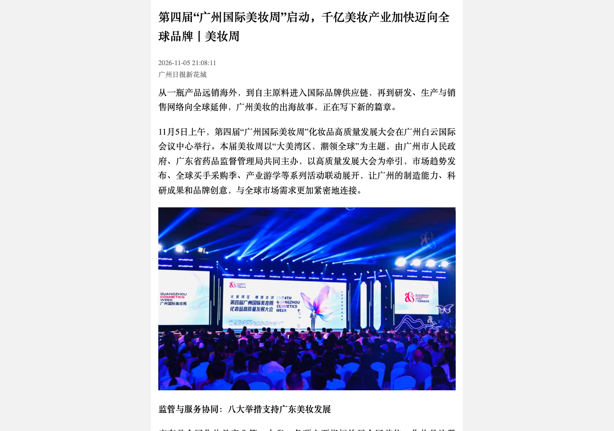

S广州与上海接连补齐研发、监管和买手对接，美妆出海竞争进入链条协同阶段
11 月 4 日，第四届广州国际美妆周进入展期，4—5 日的全球买手采购季将原料、包材、成品和OEM制造放进同一对接场景。5 日的高质量发展大会发布《2026广州化妆品产业白皮书》，广东省药监局同时介绍支持原料创新、品牌培育、产业结构优化和出海的八项举措。采购季现场覆盖拉美、中东、非洲、东南亚及欧洲买手；媒体对首日金额分别使用“订单”和“意向签约”口径，目前只能确认初步合作意向，尚无已履约出口额数据。广州国际美妆周官网｜广州日报现场报道｜新快报采购季报道｜广州日报监管采访
11 月 7 日，东方美谷国际化妆品大会首次进入进博会，奉贤区发布化妆品数据全链条监管平台，见证奉贤与静安产业联合品牌签约；同日，美创静界与嘉吉签署合作备忘录，涉及原料配方、亚洲肤质测试和东南亚市场，并宣布共建联合实验室。这些动作分别发生在产业集群、数据监管与企业研发层面，不能合并为某个品牌已经完成海外铺货。上海奉贤区政府通报｜上观新闻签约报道
把两地动作放在同一条出海链上看，海外买家提出的肤质、剂型、包材与合规需求，需要被国内研发和生产体系快速吸收。对品牌与代工企业，采购会后最重要的指标是样品测试、目的地合规、订单转化和复购；对产业园区，则是能否把企业、检测和渠道服务连接成可持续交付能力。活动规模与意向金额不足以代替这些结果。广州日报现场报道｜上海奉贤区政府通报
